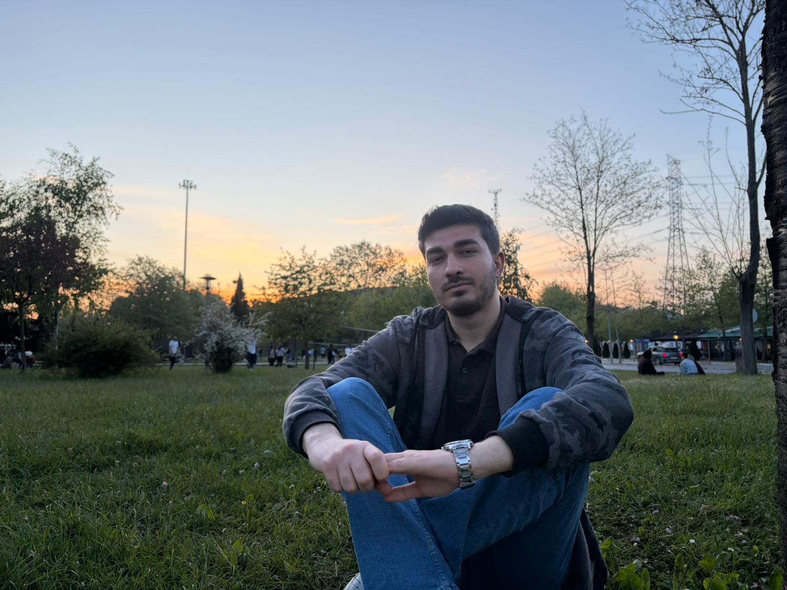

Hakkımda
Ben Ugur Aliosmanoglu. İzmirliyim ve Bulgar göçmeni bir aileden geliyorum. Günlük hayatımda oyun oynamayı, arkadaşlarımla vakit geçirmeyi ve ilgimi çeken konular üzerine araştırma yapmayı seviyorum.
Özellikle CS2 fun serverları için plugin yazmak hoşuma gidiyor. Bu tarz uğraşlar hem oyunlarla ilgili tarafımı hem de yazılıma olan merakımı bir araya getiriyor. Bu siteyi de Web Teknolojileri dersi kapsamında kendimi, memleketimi ve ilgi alanlarımı tanıtmak için hazırladım.
Hobilerim
Video Oyunları
Boş zamanlarımda video oyunları oynamayı seviyorum. Özellikle arkadaşlarla oynanan oyunlar benim için daha keyifli oluyor.
Fantastik Kitaplar
Fantastik evrenler ve detaylı hikâyeler ilgimi çekiyor. Bu yüzden fantastik kitaplar okumak hobilerim arasında yer alıyor.
Futbol
Futbol hem izlemekten hem de oynamaktan keyif aldığım bir spor. Arkadaşlarla oynanan maçlar benim için eğlenceli aktivitelerden biri.
Sevdiğim Etkinlikler
Voleybol Oynamak
Arkadaşlarımla voleybol oynamak sevdiğim etkinliklerden biri. Hem eğlenceli hem de hareketli bir aktivite olduğu için hoşuma gidiyor.
Uzay Araştırmaları
Uzayla ilgili konuları araştırmak ilgimi çekiyor. Gezegenler, galaksiler ve evren hakkında yeni şeyler öğrenmek bana keyif veriyor.
Taş Kafe
Arkadaşlarımla Taş Kafe'de oturmak favori etkinliklerimden biri. Sohbet etmek ve birlikte vakit geçirmek benim için en keyifli aktivitelerden.
Tanıtım Videosu
Bu kısa video, site içinde kullanılan İzmir görsellerinden hazırlanmıştır.